居民共商共治，雨儿胡同实现不停车
来源：北京东城
从7月初开始，南锣鼓巷主街西侧的雨儿胡同正式实施胡同不停车，昔日因停车占道而十分局促的胡同变得宽敞了，安静了。这其中，居民议事会功不可没。
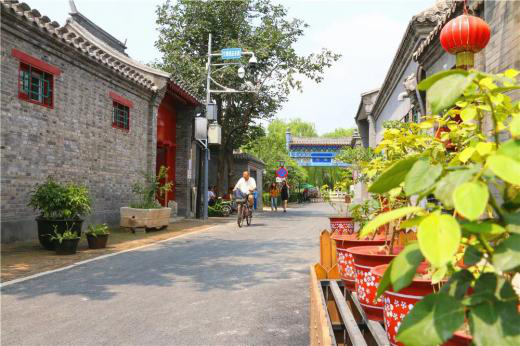首次议事会居民提3点建议
自去年下半年，交道口街道共召开10余次居民议事会，充分了解居民诉求，逐步推进雨儿胡同不停车工作。
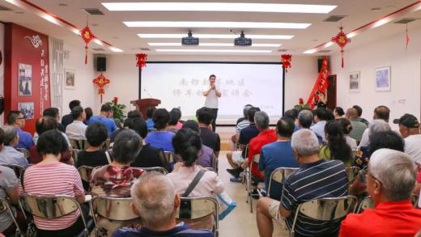去年7月，街道组织召开了第一次居民议事会，以“雨儿胡同公共空间有效利用”为主题，邀请40位有停车需求的居民参会。会上，街道相关部门干部、福祥社区居委会干部和居民们坐在一起，面对面交流。
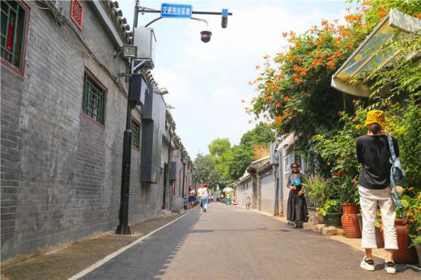议事会上，交道口街道城市管理办公室副主任杨升首先介绍了胡同现状：“胡同公共空间要想有效利用，首先应该把空间腾出来。而雨儿胡同公共空间被占用最多的就是停车，咱们得把车开出胡同，把公共空间还给大家共享。”
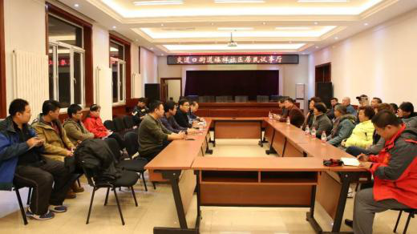在讨论中，大部分居民表示同意胡同实施不停车，但也各有顾虑：“若车不停在胡同里，还有哪些就近的地方可停？”“家里有老有小，万一有紧急情况，车停在家门口方便开，如果停远了，耽误事儿怎么办？”“自家车停在自家门口，已经是几十年的习惯了，现在为何不能停了？”
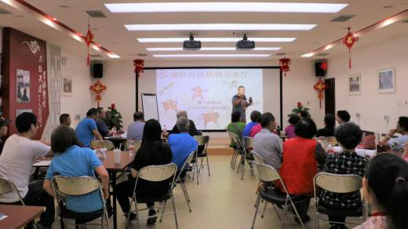社区工作人员将居民们的想法一一记录下来，并总结归纳出车辆安置、居民突发情况应急处理、对胡同不停车政策和规划不了解共3点意见建议。
两处停车场给居民优惠价
随后，街道针对这3点意见建议，有针对性地召开了居民议事会。
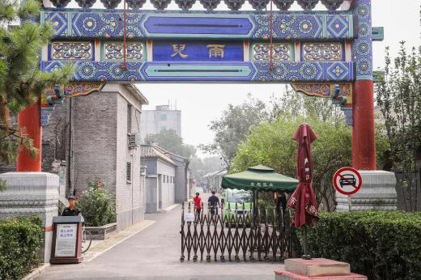针对不了解胡同不停车政策、规划的意见建议，街道专门邀请了区交通委、区交通支队的工作人员以及北京百瑞律师事务所、北京市静态交通业商会的专业人士，参与居民议事会，现场为居民解疑释惑。
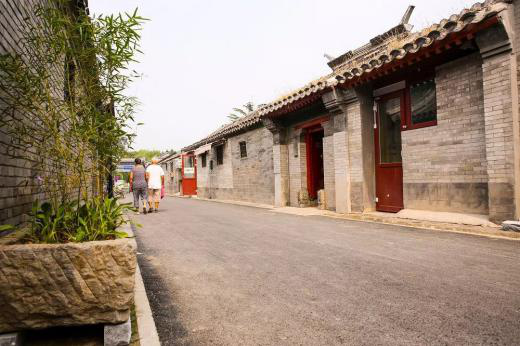在议事会上，区交通委、区交通支队的工作人员为居民解读了《北京市机动车停车条例》等政策法律法规，同时向居民说明胡同停车占道，成为阻隔生命安全通道的安全隐患。现场不少居民表示生命安全是第一位的，愿意配合开展胡同不停车工作。
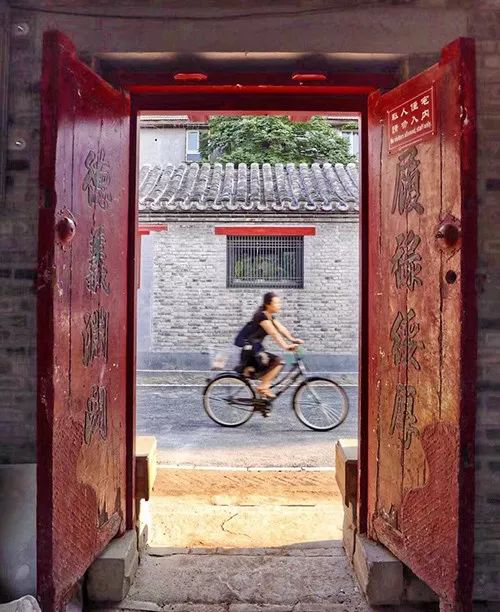针对车辆安置问题，街道已协商南锣鼓巷南口地上停车场和玉河地下车库的停车位，并以低于市场价格的优惠价供居民使用。
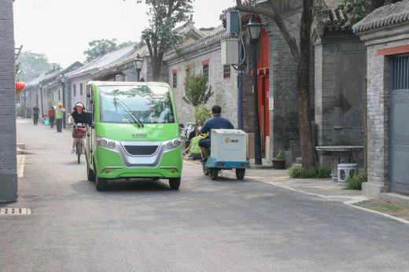针对居民突发情况应急处理问题，街道委托平房区物业管理公司购买了两辆电瓶车，用于摆渡。居民只要有需求，可拨打社区电话，摆渡车5分钟内赶到，将居民运送到停车场。居民们纷纷表示，自己的意见建议被采纳，并给出了实际解决方法，大家都很满意。
雨儿胡同将成立居民自管会
去年10月8日，雨儿胡同居民牛金山作为第一位登记停车的居民，将车正式停入玉河地下车库，他高兴地说：“以前在胡同里停车都是‘见缝插针’。如今有了‘专属车位’，风吹不着，雨淋不着，而且价格适中，我很满意。通过居民议事会让大家各抒己见，自由发声，大家对社区、政府更信任了。”
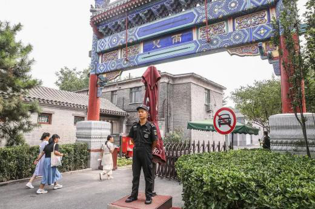今年，《南锣鼓巷历史文化街区机动车停车规划》正式出台。街道再次组织还未给车“安家”的居民召开居民议事会，向居民讲解了新出台的规划。
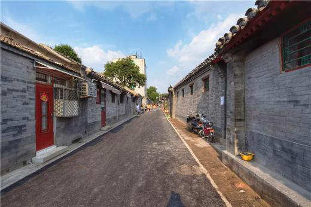目前，雨儿胡同内的所有车辆均已驶离，实现了胡同不停车。杨升表示，下一步，街道将继续发挥居民议事会的作用，组织居民成立自管会，参与胡同环境治理，达到共商共治共享。